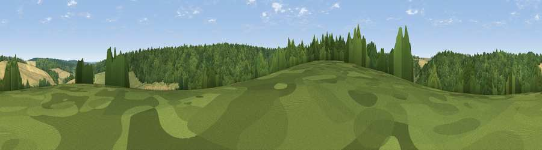

Viewpoint near Shottenden
#45754 in England · top 99% of its area beats it · near Shottenden · access?Where it is
The exact computed spot (TR 04725 52275). Click the marker for map links.
Public access: no public right of way or access land is recorded at this exact spot — it may be on private land. Computed from Natural England's CRoW access layer and OpenStreetMap rights of way — not the legal definitive map. Always verify locally.
The view, rendered

A 360° render of this exact spot computed from the terrain model, tree cover and land cover — summer colours, afternoon light, calibrated against photographs of famous viewpoints. Real trees, hedges and buildings will differ in detail.
The panorama
Grey silhouette: terrain skyline in each direction (720 bearings, Earth curvature and refraction included). Dashed green: skyline with trees (+15 m) and buildings (+8 m) as obstacles. Blue strip: how far the ground is visible on each bearing.
Where the view opens
Wedge length = distance to the farthest visible ground on that bearing (vegetation-aware). Rings at 10, 25 and 50 km.
What fills the view
74% woodland · 16% cropland · 10% grassland
Angular shares of the visible panorama (visual magnitude), not map area. Landscape diversity 0.33 (0–1 Shannon).
Key numbers
More beautiful places nearby
The staircase of upgrades: each row has a higher view potential than everything closer. Driving times are estimates from straight-line distance, calibrated against real road routing — check an actual route before setting out.
| Place | Direction | Drive | Score |
|---|---|---|---|
| Viewpoint near Godmersham | SSE · 2 km | ~6 min | 31.0 |
| Viewpoint near Shottenden | N · 3 km | ~7 min | 60.2 |
| Viewpoint near Boughton Aluph | SSW · 4 km | ~9 min | 66.7 |
| Viewpoint near Wye | SSE · 6 km | ~13 min | 70.9 |
| Viewpoint near Westwell | WSW · 8 km | ~15 min | 72.2 |
| Tolsford Hill | SE · 18 km | ~31 min | 77.9 |
| Viewpoint near Capel-le-Ferne | SE · 24 km | ~39 min | 80.2 |
| Viewpoint near Willingdon | SW · 69 km | ~92 min | 83.4 |
51.23292, 0.93109 · source: screening · position refined by local search. Computed location — check access rights before visiting.